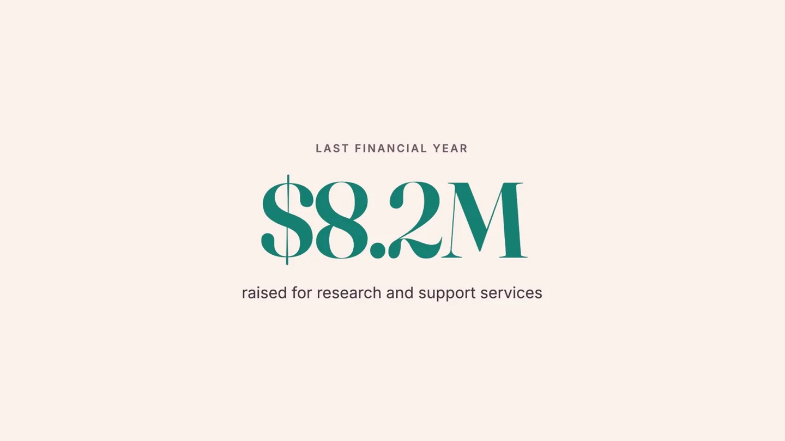

Best Technical Execution, FY27 Marketing Cloud Next ANZ Nonprofit Partner Showdown.
Salesforce set a nonprofit brief: a three-person marketing team at a Sydney breast cancer charity, running on NPSP and Mailchimp, with no budget for headcount. We rebuilt it on Data 360 and Marketing Cloud Next, and Salesforce named it best on technical execution.

The demo runs twelve minutes. Ask us and we will send you the recording.
“Salesforce celebrates Enable Digital for Best Technical Execution in the FY27 Marketing Cloud Next ANZ Nonprofit Partner Showdown.”
The organisation in the brief.
A real constraint, not a straw man. Plenty of New Zealand and Australian charities are exactly this shape: a loyal supporter base, a team too small to hand-craft anything, and two systems that do not talk.
Raised from a loyal supporter base
Marketers, working standard business hours
Systems before this, NPSP and Mailchimp
Three systems, one supporter.
Contacts, a custom Donation object and web engagement records were ingested from the CRM, then resolved through identity resolution into a single Unified Individual. Every gift, visit and interaction attaches to one trusted view rather than sitting scattered.
Four measures, surfaced where they can be used.
Calculated Insights describe each supporter by giving history, lapse risk and capacity, and sit directly on the Unified Individual. That is what makes them available for segmentation and, more importantly, for personalisation inside a message.
Donor Value
Lifetime giving, gift count, average gift and recency.
Churn Risk
How likely a supporter is to drift away, derived from time since last gift.
Donor Capacity
A sensible ask band inferred from past giving behaviour, so the amount suggested is one the supporter has already shown they can give.
Engagement Score
A summary of digital activity, so quiet does not get mistaken for gone.
One sentence in, a grounded campaign out.
A Data Graph over the Unified Individual gives Marketing Cloud Next a fast, reliable way to pull a supporter’s real figures into a message. On top of it we built reusable segments, including a Loyal but Lapsing audience of committed supporters who have quietly gone quiet.
“Build a re-engagement campaign for the Loyal but Lapsing segment, inviting them back for Walk for Hope 2026.”
Agentforce understands the objective, asks a sensible clarifying question, identifies the right business unit and produces a complete campaign brief grounded in the real segment rather than generic filler. A marketer then reviews and refines. The human stays firmly in control.
A journey that exits on the gift, not the open.
The ask is sized to the supporter
The one-click gift amount comes from Donor Capacity, so nobody is asked for a figure they have never given, and nobody generous is asked for twenty dollars.
SMS only where opted in
The nudge goes by email, and by matching SMS only where the supporter has consented. Consent is a compliance artefact here, not a preference.
Guardrails written before the copy
No fear, no guilt, no medical claims, Australian dollars throughout. Easier to enforce on an agent than on a deadline-pressed human, which is part of the point.
The measure changes, and that is the actual win.
Open rate tells a three-person team almost nothing they can act on. Following the same segment from reach through to money lets them judge a campaign by supporters re-activated, registrations secured and funds raised.
Illustrative demo figures, not results from a live campaign.
This was a demo, and we are going to keep saying so.
Project Charity is a scenario built for the Nonprofit Partner Showdown, not a client we delivered for. The funnel numbers are illustrative, and the supporter-facing landing page and SMS thread were mocked. What was genuinely built is the part the award was for: the Data 360 ingestion and identity resolution, the Calculated Insights, the Data Graph, the Loyal but Lapsing segment, the Agentforce-drafted campaign and the branching journey. Config and clicks, not code. If you want to see it running rather than read about it, ask us for the recording.
A three-person team with the reach of thirty.
If your marketing team is small and your data is in two places, this is the shape of the conversation. We will show you the demo and tell you honestly what it would take on your own data.
Blair Rooney, Managing Director. blair@enabledigital.co, +64 22 226 4252.